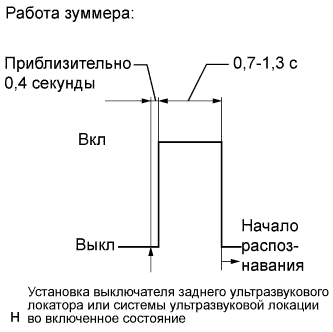

СЕНСОРНАЯ СИСТЕМА ПОМОЩИ ПРИ ПАРКОВКЕ TOYOTA (с 4 датчиками) > ПРОВЕРКА РАБОТЫ СИСТЕМЫ |
| ПЕРВОНАЧАЛЬНАЯ ПРОВЕРКА |
|  |
Выполните первоначальную проверку работы зуммера.
После включения выключателя заднего ультразвукового локатора или системы ультразвуковой локации убедитесь, что: 1) спустя 0,4 с зуммер издает звуковой сигнал длительностью примерно от 0,7 до 1,3 с; 2) система начинает распознавать препятствия.
Выполните первоначальную проверку работы датчика.
По окончании первоначальной проверки, в случае обнаружения неисправности датчика вследствие обрыва цепи, зуммер издает звуковой сигнал, чтобы уведомить водителя и обозначить неисправный датчик.
В случае, если ЭБУ определяет необходимость ремонта или очистки датчика:
В случае, если ЭБУ определяет необходимость очистки датчика:
| ИЗМЕРЕНИЕ РАСПОЗНАВАЕМОЙ ДИСТАНЦИИ И ПРОВЕРКА ИНДИКАТОРА |
Установите замок зажигания в положение ON (ВКЛ).
Установите выключатель заднего ультразвукового локатора или системы ультразвуковой локации в положение ON (ВКЛ).
Переведите рычаг переключения передач в положение заднего хода (R) для проверки угловых и центральных задних ультразвуковых датчиков.
Перемещайте шест вокруг датчика, чтобы измерить дистанцию распознавания датчика.
Диапазон распознаваемых дистанций заднего углового датчика
Диапазон распознаваемых дистанций заднего центрального датчика
При включенном выключателе заднего ультразвукового локатора или системы ультразвуковой локации проверьте, включается ли зуммер, когда ультразвуковые датчики обнаруживают препятствие.
| Положение рычага переключения передач | Работа зуммера | |
| Левый задний Правый задний | Левый задний угловой Правый задний угловой | |
| R | Подает звуковой сигнал | Издает звуковой сигнал |
Убедитесь, что при включенном выключателе заднего ультразвукового локатора или системы ультразвуковой локации зуммер издает звуковой сигнал.
| Распознавание | Расстояние |
| 1. Распознавание малой дистанции | В диапазоне 250 +/-30 мм (9,84 +/-1,18 дюйма) |
| 2. Распознавание средней дистанции | От 250 +/-30 до 375 +/-40 мм (от 9,84 +/-1,18 до 14,8 +/-1,57 дюйма) |
| 3. Распознавание дальней дистанции | От 375 +/-40 до 550 +/-60 мм (от 14,8 +/-1,57 до 21,7 +/-2,36 дюйма) |
| Распознавание | Расстояние |
| 1. Распознавание малой дистанции | В диапазоне приблизительно 400 +/-40 мм (15,7 +/-1,57 дюйма) |
| 2. Распознавание средней дистанции | От 400 +/-40 до 500 +/-50 мм (от 15,7 +/-1,57 до 19,7 +/-1,97 дюйма) |
| 3. Распознавание дальней дистанции | От 500 +/- 50 до 650 +/- 70 мм (от 19,7 +/- 1,97 до 25,6 +/- 2,76 дюйма) |
| 4. Распознавание максимально дальней дистанции | От 650 +/- 70 до 1500 +/- 150 мм (от 25,6 +/- 2,76 до 59,1+/- 5,91 дюйма) |
Проверьте индикатор и звук зуммера, когда задние центральные датчики и задние угловые датчики обнаруживают препятствие.
| Замок зажигания | Выключатель заднего ультразвукового локатора или системы ультразвуковой локации | Положение рычага переключения передач |
| ON (ВКЛ) | On (вкл) | R |
| Распознаваемая дистанция | Зуммер |
| 1. Распознавание малой дистанции | Непрерывно издает звуковой сигнал |
| 2. Распознавание средней дистанции | Издает прерывистый звуковой сигнал (вкл: 75 мс, выкл: 75 мс) |
| 3. Распознавание дальней дистанции | Издает прерывистый звуковой сигнал (вкл: 150 мс, выкл: 150 мс) |
| 4. Распознавание максимально дальней дистанции | Издает прерывистый звуковой сигнал (вкл: 150 мс, выкл: 650 мс) |
| Распознаваемая дистанция | Включенный индикатор |
| 1. Распознавание малой дистанции | Угловые индикаторы горят и/или задний индикатор горит |
| 2. Распознавание средней дистанции | Угловые индикаторы мигают и/или задний индикатор мигает |
| 3. Распознавание дальней дистанции | Угловые индикаторы мигают и/или задний индикатор мигает |
| 4. Распознавание максимально дальней дистанции | Задний индикатор мигает |
| *1 | Индикатор предупреждения о недопустимой дистанции | - | - |
| *a | Угловой индикатор | *b | Задний индикатор |